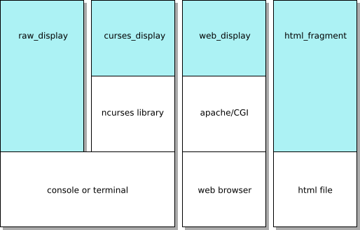

Display Modules¶
Urwid’s display modules provide a layer of abstraction for drawing to the screen and reading user input. The display module you choose will depend on how you plan to use Urwid.

Typically you will select a display module by passing it to your
MainLoop constructor, eg:
loop = MainLoop(widget, ..., screen=urwid.display.curses.Screen())
If you don’t specify a display module, the default main loop will use
display.raw.Screen by default
# These are the same
loop = MainLoop(widget, ...)
loop = MainLoop(widget, ..., screen=urwid.display.raw.Screen())
Raw and Curses Display Modules¶
Urwid has two display modules for displaying to terminals or the console.
The display.raw.Screen module is a pure-python display module with no
external dependencies. It sends and interprets terminal escape sequences
directly. This is the default display module used by
MainLoop.
The display.curses.Screen module uses the curses or ncurses library
provided by the operating system. The library does some optimization of screen
updates and uses termcap to adjust to the user’s terminal.
The (n)curses library will disable colors if it detects a monochrome terminal,
so a separate set of attributes should be given for monochrome mode when
registering a palette with display.curses.Screen High colors will not be
used by the display.curses.Screen module. See Setting a Palette
below.
This table summarizes the differences between the two modules:
raw display |
curses display |
|
|---|---|---|
optimized C code |
no |
YES |
compatible with any terminal |
no |
YES [1] |
UTF-8 support |
YES |
YES [2] |
bright foreground without bold |
YES [3] |
no |
88-/256-/24-bit color support |
YES |
no |
mouse dragging support |
YES |
no |
external event loop support |
YES |
no |
OSC 8 hyperlinks |
YES [4] |
no |
window title |
YES [5] |
no |
clipboard copy (OSC 52) |
YES [6] |
no |
Screens Without Event Loop Support¶
The curses and web screens read their input themselves and cannot hand their
descriptors to an event loop, so MainLoop drives them with a loop of its
own that waits in the screen’s get_input().
Files watched with MainLoop.watch_file(), and calls made with
MainLoop.call_from_thread(), are handled when that wait ends.
The curses screen waits until a key arrives (a window resize counts as one) or the
next alarm is due, so a worker’s update can wait until the user presses a key.
Pass poll_interval to cut the wait into polls, so they are handled within that
many seconds:
loop = urwid.MainLoop(widget, screen=urwid.display.curses.Screen(), poll_interval=0.5)
Each poll wakes the process, which costs CPU time and power while the application is
idle, so set it only when something has to reach the screen without input, and
choose the longest interval the application can accept. The shortest is 0.1 seconds,
since the curses screen waits in tenths of a second.
An application with an alarm that fires regularly, such as a clock, gets the same
effect from that alarm.
On Windows the curses screen cannot stop waiting before a key arrives, so
poll_interval has no effect there.
The web screen ends its wait every 0.5 seconds by itself, so it needs no
poll_interval, and a shorter one does not make it check sooner.
The raw display, the default, needs none of this: it waits on all its descriptors and the watched files at once.
Other Display Modules¶
WebSocket Display Module display.websocket¶
The urwid.display.websocket module draws your application into a web
browser page over a WebSocket. It does not depend on an HTTP or WebSocket
library: a small adapter written for the server library you use connects one
display.websocket.Screen to each WebSocket connection.
The adapter serves the page from
display.websocket.html_page()and the files indisplay.websocket.STATIC_FILES.For each connection it creates a screen with a
display.websocket.Transportthat sends text messages over that connection, and aMainLoopon the event loop the server library runs on. It callsMainLoop.start()instead ofMainLoop.run(), because the server library runs the event loop.It gives each main loop the shared event loop wrapped in a
GuardedEventLoopwhose handler closes that session’s screen. Without the wrapper, an exception in one session stops the event loop, and with it every session.It passes every message from the browser to
display.websocket.Screen.feed()and closes the connection when that raisesdisplay.websocket.InvalidMessageError.It calls
MainLoop.stop()when the connection closes.
The screen is at most display.websocket.MAX_COLS columns by
display.websocket.MAX_ROWS rows, 223 each by default, the largest size
an X10 mouse report can address in a terminal. A page in a larger window
uses that size and leaves the rest of the window empty. For a taller or wider
screen, give the same max_cols and max_rows to the
display.websocket.Screen and to display.websocket.html_page().
Every session is a live connection: there are no files, pipes or session tokens on
the server. The screen accepts only the messages its page script sends: a known key
name, a window size, or a mouse event, in a message of limited length.
ExitMainLoop raised by an input handler ends only the session it was raised in.
The page reports mouse presses, releases and drags on the screen, and the scroll wheel, as the mouse events of the other screens. It takes the mouse buttons on the screen area for the application, so text there cannot be selected with the mouse, and the right button does not open the browser’s menu. The wheel turned with Ctrl held is left to the browser, which zooms the page with it.
The page has no inline script or style, so it works under a strict
Content-Security-Policy. The screen itself does no access control: the adapter
checks the Origin of each WebSocket handshake, limits the message size and the
number of sessions, and authenticates users, also on a loopback address, which every
user of the host can reach.
The websocket_tornado.py example is such an adapter for Tornado, with these checks
in place, a limit on failed logins, and a GuardedEventLoop per session.
Warning
The example shows how to connect the screen to a server library; it is not a production server. Its TLS support only loads a given certificate and key, and it was not tested against real clients. Whoever builds a production service is responsible for its TLS: the certificates and their renewal, the protocol versions and ciphers, and usually a reverse proxy or load balancer that terminates TLS. The same holds for authentication beyond the single shared token of the example.
CGI Web Display Module display.web¶
The urwid.display.web module lets you run your application as a CGI
script under Apache instead of running it in a terminal.
This module is a proof of concept. There are security and responsiveness issues that need to be resolved before this module is recommended for production use.
The tour.py example program demonstrates use of this module.
Screenshot Display Module html_fragment¶
Screenshots of Urwid interfaces can be rendered in plain HTML. The
display.html_fragment.HtmlGenerator display module lets you do this by simulating user input
and capturing the screen as fragments of HTML each time
display.html_fragment.HtmlGenerator.draw_screen() is
called.
These fragments may be included in HTML documents. They will be rendered
properly by any browser that uses a monospaced font for text that appears in
<pre> tags. HTML screenshots have text that is searchable and selectable in
a web browser, and they will shrink and grow when a user changes their
browser’s text size.
The example screenshots are generated with this display module.
LCD Display Module display.lcd¶
Deprecated since version 5.1.0: The LCD display module will be removed in version 6.0, with no replacement.
Almost any device that displays characters in a grid can be used as a
screen. The display.lcd module has some base classes for simple
LCD character display devices and a complete implementation of a
display.lcd.CF635Screen for Crystal Fontz 635 USB displays with
6 buttons.
The lcd_cf635.py example program demonstrates use of this module.
See also
Setting a Palette¶
The MainLoop constructor takes a palette parameter that it passes
to the register_palette() method of your display module.
A palette is a list of display attribute names and foreground and background settings. Display modules may be run in monochrome, normal or high color modes and you can set different foregrounds and backgrounds for each mode as part of your palette. eg:
loop = MainLoop(widget, palette=[
('headings', 'white,underline', 'black', 'bold,underline'), # bold text in monochrome mode
('body_text', 'dark cyan', 'light gray'),
('buttons', 'yellow', 'dark green', 'standout'),
('section_text', 'body_text'), # alias to body_text
])
The Display Attributes section of this manual describes all the options available.